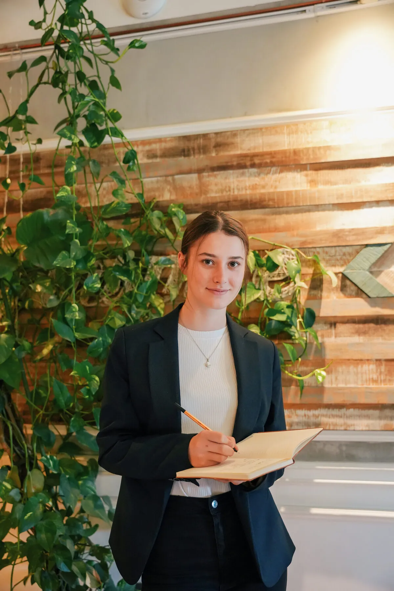
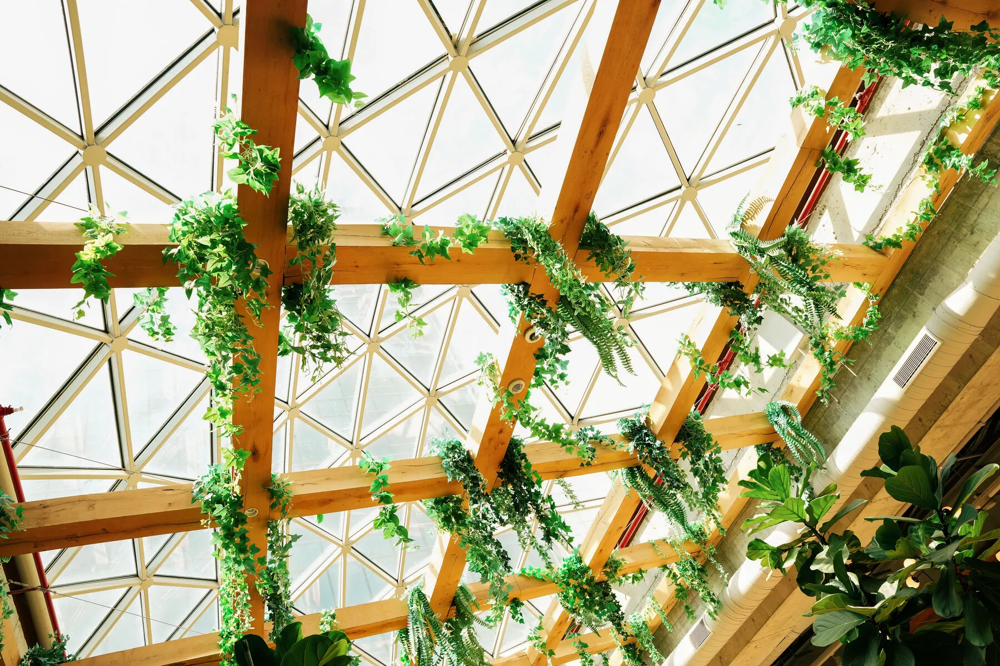
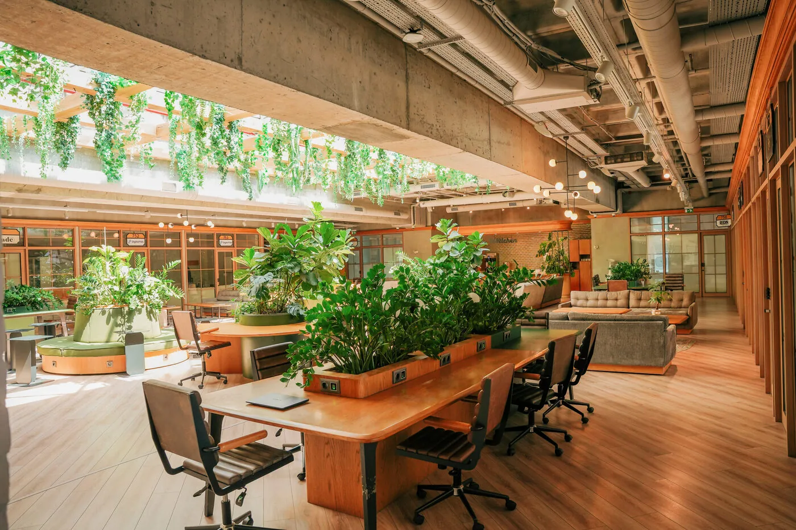
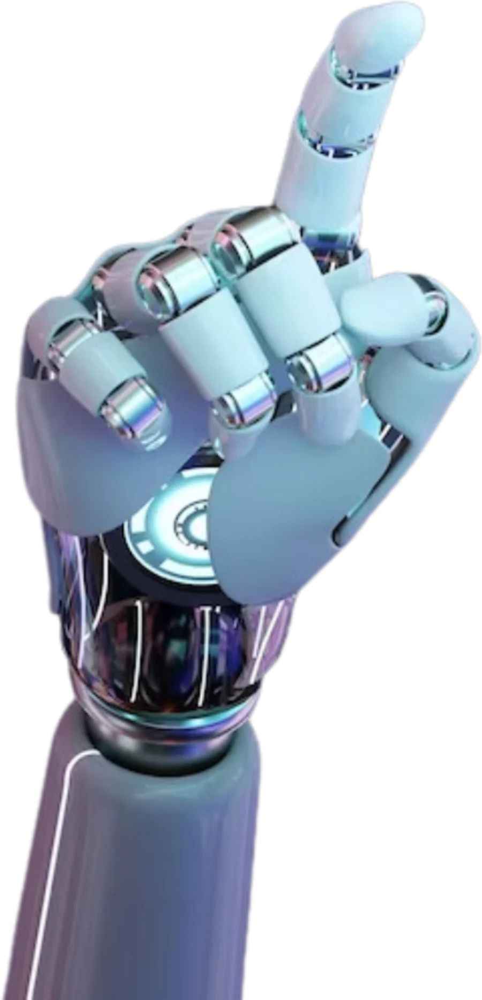

Un modelo de negocio donde la rentabilidad y la responsabilidad medioambiental son el mismo núcleo.

El modelo busca generar valor económico mientras resuelve una problemática ambiental real.
Sostenibilidad económica como base para crecer y perdurar.
El impacto positivo no es accesorio: es la razón de ser del producto.
Ambas conviven en el núcleo de la operación, no en compartimentos separados.
El empaque arrastra el costo ambiental de las industrias que lo producen. Tres frentes concentran las emisiones.
Hasta un 25% de la emisión mundial, que escala al 30% sumando toda la energía requerida para producir.
La mayor consumidora de energía industrial: responsable de entre el 4% y 6% de las emisiones mundiales de GEI.
Entre los mayores productores de emisiones globales, 7% a 9%. Ejemplos: cementera y textil.
El impacto del empaque se concentra en la crisis global de residuos plásticos y en la huella de carbono de su producción —sobre todo el plástico de un solo uso derivado del petróleo.
Tres caminos concretos donde el impacto ambiental se vuelve oportunidad de negocio.


Guardar inventario también emite. Operar un almacén genera emisiones aun cuando nada se mueve.
En tecnologías para la gestión con enfoque en el emprendimiento con impacto social, la IA nos ayuda a complementar la toma de decisiones.
Una asistente virtual especializada en el simulador de negocio Energ&Co, diseñada para ayudar a comprender y optimizar decisiones en la gestión de una empresa productora de bebidas energéticas.
Su enfoque está en las decisiones estratégicas y operativas que mejoran el Valor de la Compañía:

Dentro del simulador Energ&Co el enfoque está en la gestión empresarial, y no se detallan en profundidad los impactos ambientales de cada decisión. Pero en un contexto real, la calidad del empaque influye en la percepción de la marca, los costos de producción y la aceptación del cliente. Las decisiones se centran en asignación de recursos, desarrollo de productos, fijación de precios, distribución y promoción.
Administrar eficientemente el inventario es crucial para optimizar costos y evitar pérdidas. Las decisiones buscan mantener un equilibrio entre suministro y demanda para minimizar costos de almacenamiento y evitar pérdidas por productos no vendidos. Mejorar esa eficiencia reduce costos generales, mejora el flujo de caja y disminuye el impacto ambiental asociado al exceso de producción y almacenamiento.
5 preguntas rápidas sobre el impacto ambiental. Estima cada dato y descubre qué tan cerca estuviste de la realidad.
Jugar el quiz